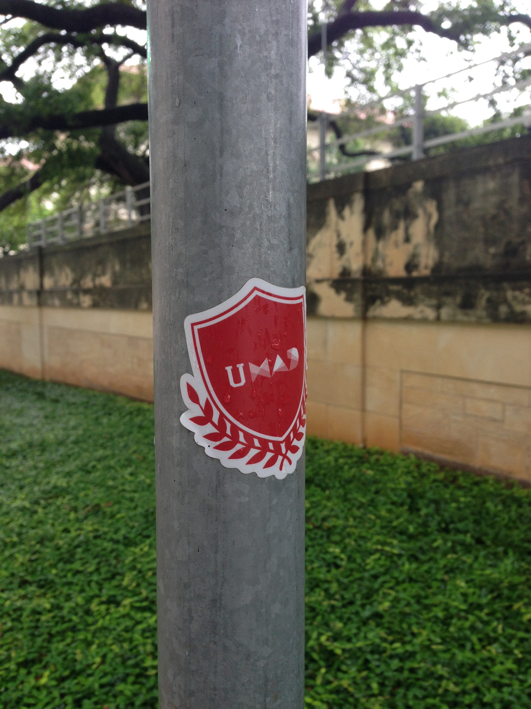

Mobile App Development (MAD) student organization holds weekly tutorials on mobile development platforms to continue education beyond the classroom. Every spring, MAD hosts industry professionals for an annual student developer conference called uMAD. Addtionally, a dedicated team within the organization, MAD labs, develops specific project requests. Each part of the organization upholds the same values and overall branding identity. The MAD logo changes its character for each entity while maintaining the outer shape for consistent recognition.
